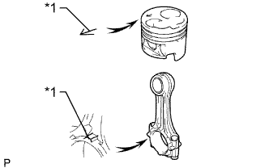

БЛОК ЦИЛИНДРОВ > ПОВТОРНАЯ СБОРКА |
| 1. INSTALL STUD BOLT |
Install the stud bolts as shown in the illustration.
| *a | Right Side | *b | Thread diameter: 8 mm |
| 2. INSTALL NO. 1 TAPER SCREW PLUG |
Apply adhesive to 2 or 3 threads of the screw plug.
Install the screw plug.
| 3. INSTALL CYLINDER BLOCK WATER DRAIN COCK SUB-ASSEMBLY |
Apply adhesive to 2 or 3 threads of the water drain cock.
| *1 | Adhesive |
Install the water drain cock.
| *1 | Port |
| *a | Downward |
| 4. INSTALL CYLINDER BLOCK OIL ORIFICE |
Using a 6 mm hexagon socket wrench, install the oil orifice.
| 5. INSTALL NO. 1 OIL NOZZLE SUB-ASSEMBLY |
Align the pin of the oil nozzle with the one of the pin holes of the cylinder block.
Install the oil nozzle with the check valve.
| 6. INSTALL PISTON SUB-ASSEMBLY |
Assemble the piston and connecting rod.
Using snap ring pliers, install a new snap ring on one side of the piston pin hole.
Gradually heat the piston to about 60°C (140°F).
Coat the piston pin with engine oil.
|  |
Align the front marks of the piston and connecting rod, connect the connecting rod to the piston, and then push in the piston pin with your thumb.
| *1 | Front Mark |
Check the fitting condition between the piston and piston pin. Try to move the piston back and forth on the piston pin.
 |
Using snap ring pliers, install a new snap ring on the other side of the piston pin hole.
| 7. INSTALL PISTON RING SET |
Install the piston rings.
Install the coil and oil ring by hand.
| *1 | Coil Joint |
| *2 | Oil Ring Ends |
Using a piston ring expander, install the No. 1 and No. 2 piston rings with the code mark facing upward.
| Item | Code Mark |
| No. 1 piston ring | 1N |
| No. 2 piston ring | 2N |
| *1 | No. 1 |
| *2 | No. 2 |
| *3 | Code Mark |
Position the piston rings so that the ring ends are as shown in the illustration.
| *1 | No. 1 Compression Ring |
| *2 | No. 2 Compression Ring |
| *3 | Oil Ring |
| *4 | Coil |
| *5 | Front Mark |
| 8. INSTALL CONNECTING ROD BEARING |
Align the bearing claw with the groove of the connecting rod or connecting rod cap.
Install the bearings to the connecting rod and connecting rod cap.
| 9. INSTALL CRANKSHAFT BEARING |
Align the bearing claw with the claw groove of the cylinder block, and push in the 5 upper bearings to install them.
Align the bearing claw with the claw groove of the crankshaft bearing cap, and push in the 5 lower bearings to install them.
| 10. INSTALL CRANKSHAFT THRUST WASHER SET |
Install the 2 thrust washers to the No. 3 journal position of the cylinder block with the oil grooves facing outward.
| *1 | Oil Groove |
Install the 2 thrust washers to the No. 3 crankshaft bearing cap with the grooves facing outward.
| *1 | Oil Groove |
| 11. INSTALL CRANKSHAFT |
Place the crankshaft on the cylinder block.
Install the 5 crankshaft bearing caps in their proper locations.
Install the crankshaft bearing cap bolts.
Apply a light coat of the engine oil to the threads and under the bolt heads of the crankshaft bearing caps.
Install and uniformly tighten the 10 bolts of the crankshaft bearing caps, in several steps, in the sequence shown in the illustration.
Check that the crankshaft turns smoothly.
Check the crankshaft thrust clearance (See page Нажмите здесь).
| 12. INSTALL PISTON AND CONNECTING ROD |
Cover the connecting rod bolts with a short piece of hose to protect the crankshaft and cylinder bore from damage.
Using a piston ring compressor, push the correctly numbered piston and connecting rod assembly into the cylinder with the front mark of the piston facing forward.
| *1 | Front Mark |
Place the connecting rod cap on the connecting rod.
Match each numbered connecting rod cap with the correct connecting rod.
 |
Install the connection rod cap with the front mark facing forward.
| *1 | Front Mark |
Install the connecting rod cap nuts.
Apply a light of engine oil to the threads and under the heads of the connecting rod cap nuts.
Step 1:
 |
Install and alternately tighten the nuts of the connecting rod cap in several passes.
Step 2:
Mark the front side of the connecting rod cap nuts with paint.
Tighten the connecting rod cap nuts 90° in the shown step 1.
Check that the painted marks are now at a 90° angle to the front.
Check that the crankshaft turns smoothly.
Check the connecting rod thrust clearance (See page Нажмите здесь).